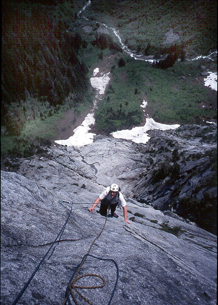
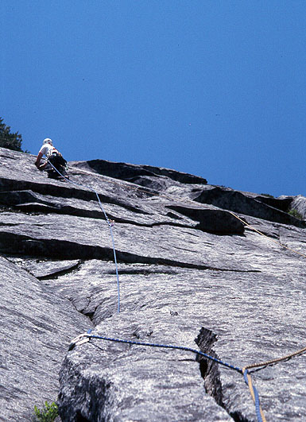
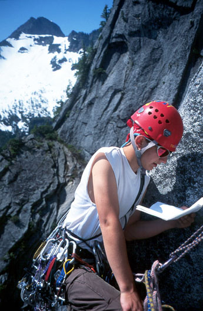
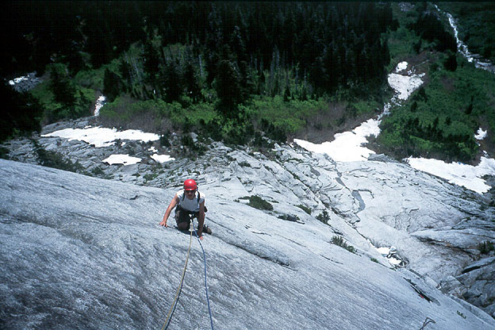
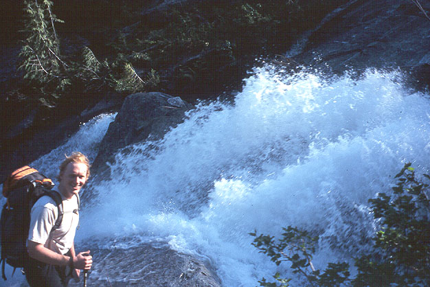
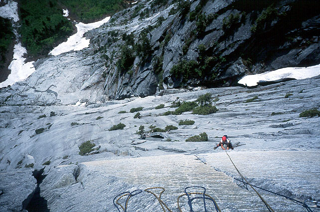
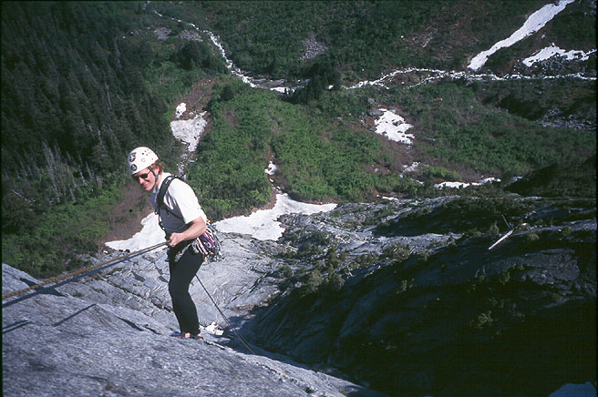
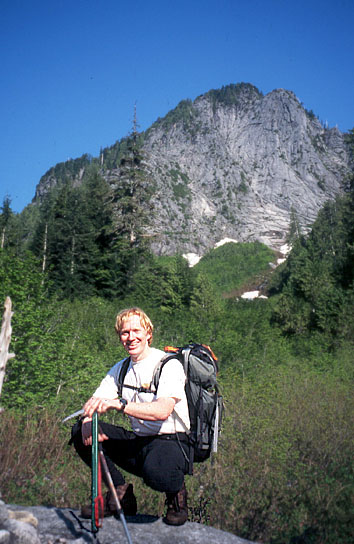
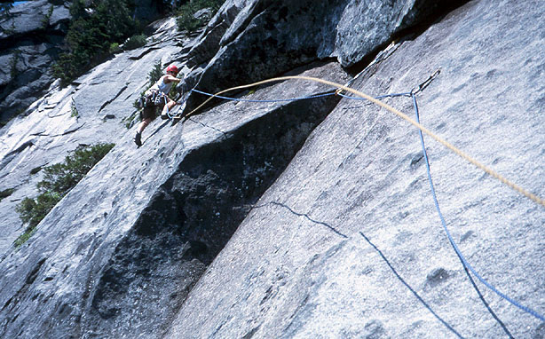
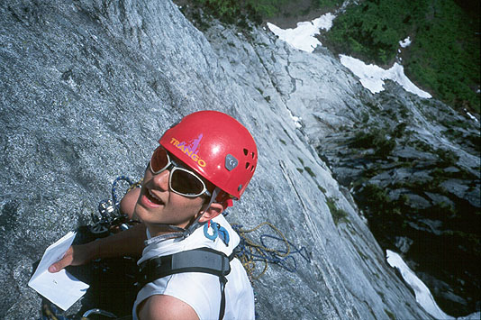

Green Giant Buttress
- Dreamer w/Safe Sex start (5.9)
- June, 2002
- Text by Aidan Haley
Well I was free at last. School had finished and I was looking ahead to a great summer of climbing. Michael earlier in the week had sent me an e-mail saying he would like to go climbing. The weather looked great, so we decided to give Green Giant Buttress a go. Since I can drive Michael generously offered a bed in his home for the night so we could get an early start the next day. After a night of Simpsons reruns where we watched Homer “climb” the Murderhorn, we fell asleep with the intention to wake up the next morning at 4:30.












“Aidan…Aidan…wake up…we over slept!” It was now 5:30! I jumped out of bed and we ran out the door. The morning was clear and we knew it was going to be a hot day. We hit the “trail head” (more like an over grown road) at 7:30 after a fun but bouncy ride up the forest road. The approach was far better than we had anticipated. It only took one hour and we only had to turn around because of a wrong decision once. Strangely enough we found a black bra hanging from a tree on the trail. Supposedly its been there for years…
We passed one other party on the approach. Michael stopped and asked them their plans, they said they wanted to do Dreamer. We wished them good luck and headed up to the base of the route. Michael tied into the ropes and started scrambling up to the first pitch of the Safe Sex variation. The scrambling was fun and easy a good warm up for the 9 pitches above us! Michael lead off the first pitch, a fun 5.7 slab, the protection was kind of spaced out but he cruised it. Our plan was to leap frog leads so he handed the rack over to me and I climbed up the next pitch. This was another fun slab pitch a little steeper than the first but I was happy to be climbing. At the anchors I handed over the rack to Michael and I took a sip of water from our Camelback. “Michael does this water kinda taste like soap to you?”
“Kinda, but soap water is better than no water!”
I hadn’t washed all the soap out of my Camelback and I was dreading the thought of the soap taste in my mouth the whole day. [I think I got 75% of the water because of that dread - ed.] Michael led up the third slab pitch which brought us to the base of the head-wall. We had sped up the slab in about 1:30 hours so far. We were now looking up at the delicious granite cracks to come!
The next pitch involved a nice short corner crack system, which brought us to the base of the first 5.9 pitch. It was Michael’s lead and he styled up it. It was a cool pitch with started with some nice hand cracks to some face climbing out into an under-cling and then into the Blue Crack. Michael and I pondered this name, its not blue so why is it called the blue crack? [I was really intimidated by the Blue Crack from below, but it turned out to be a series of easy lieback moves - ed.]
The belay was kinda uncomfortable so I was glad it was my lead, but didn’t look any more comfortable. A very steep 5.9 slab brought me to a roof. It is passed on its left via scary under-clinging. The route came back on to the face above the roof but the climbing was steep and the protection spaced out. The anchors were a welcoming site and I put Michael on belay and he took off on the next pitch a fun 5.8 face. [That pitch was hard enough just to follow, that I think I called Aidan “sir” at the belay - ed.] We rested at the comfortable ledge, eating and drinking our soap water. After that, I led up a really fun steep 5.8 wall which put us one pitch from the top. At this point the angle of the head-wall eased off and Michael raced up the final half pitch to the top. We shook each others hand and congratulated each other. We took in the views and drank the last of the evil soap water. We had climbed the route in 5 and 15 minutes and now prepared for the task of the 10 double-rope rappels down the route. The time passed and so did the rappels. We got down 2 hours later and official dubbed ourselves gangstas! The man and the woman we had encountered earlier only got up to pitch 4 before turning around. The hike out was beautiful as we walked by a cascading waterfall that flung itself into the air like a fountain. And with the sun shining through it, it was a sight to see. We made it back to the car and steamed down the logging road with not a care in our minds. Blasting Billy Joel’s “We Didn’t Start the Fire” and Tupac, we drove back home.
Thanks Michael for the great adventure, it was a great day in the mountains.